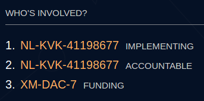

I use d-portal a lot - it’s very helpful to find good data, I find
I wanted to share this recent insight that digs into how the standard is implemented, and what this means for a) a data use project such as d-portal and b) a data user using a data use project!
This might seem quite a minor aspects of the standard, but I think interesting nevertheless, and they certainly have an impact on the end use. Many thanks to @shi at d-portal for the prompt replies and actions
When we describe an organisaton with a org reference, should we include the name too?
When looking at one activity, I was presented with the following:

As much as I like organisation references, I dont think I can recall who NL-KVK-41198677 is !
The reason for this , is that the publisher had not included the org name in the XML:
<participating-org ref="NL-KVK-41198677" role="2" type="21"/>
<participating-org ref="XM-DAC-7" role="1" type="10"/>
<participating-org ref="NL-KVK-41198677" role="4" type="21"/>
Hence, d-portal couldnt tell us the name of the organisation, as it wasnt in the data.
Thankfully, @shi found a solution, and we now have:
But - the fact remains that this data (and no doubt others) misses the org name. This would potentially cause headaches for data users.
Do we therefore insist on the name being included in the XML? Or … is there a need for a central look up of references, which isn’t as straightforward as it might seem.
But, at the publisher end, it probably makes sense to keep things simple, and avoid repetition, particularly is you are talking about the same organisations time and again. We only need to say NL-KVK-41198677 = Hivos once, right? After all, we want the machines to read the machine-readable data?
Any thoughts welcome